AI 거버넌스와 에이전트 거버넌스는 어떻게 다를까요?
대표는 먼저 두 말을 나눠요. 흔히 말하는 AI 거버넌스는 어시스턴트를 전제로 해요. 자문, 질문, 답변, 참고 사항까지는 AI에게 도움을 받지만, 최종 액션은 사람이 해요. 아래 그래픽에서 주황 칸 네 개가 'AI에게 도움을 구하는' 구간이고, 오른쪽 끝 '최종 액션' 칸에만 '사람'이 붙어 있어요. 'AI 거버넌스' 깃발이 그 경계에 꽂혀 있어요.
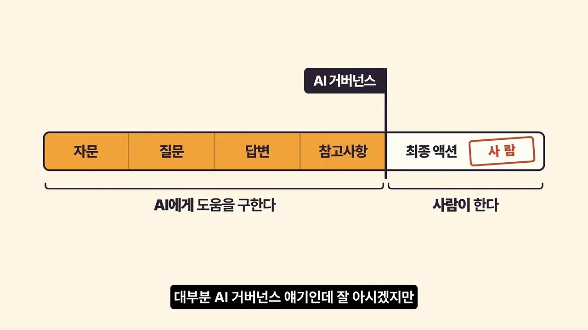
에이전트는 마지막 도장, 즉 실행까지 해요. 그사이 모델도 크게 좋아져서, 지능과 시공간의 편재성 면에서 에이전트가 미치는 영향이 커졌어요. 리스크의 크기도 커지고, 대표 표현으로 '리스크 표면'도 넓어졌어요. 그래서 거버넌스의 성격이 바뀌었다는 게 출발점이에요.
| AI 거버넌스 | 에이전트 거버넌스 | |
|---|---|---|
| 최종 실행 | 사람 | 에이전트 |
| AI의 역할 | 자문·질문·답변·참고 사항 | 실제 액션까지 수행 |
| 리스크 | 상대적으로 작고 좁아요 | 크기도 커지고 표면도 다양해져요 |
| 거버넌스의 성격 | 정적, 주기적으로 점검 | 동적, 실시간으로 해야 하는 일 |
토렌이 하려는 일도 여기서 나와요. 여러 에이전트가 동시에 도는 기업 환경에서, 실행하는 에이전트와 독립적으로 체크하고, 필요하면 동작을 멈추고 사람에게 물어요. 에이전트가 무슨 일을 왜 했는지, 혹은 왜 안 했는지 정리해서 사후 감사와 책임 소재 판단에 쓰고, 그 데이터가 다시 학습 데이터가 되게 하는 플랫폼이에요.
대부분의 기업은 아직 3단계로 가는 중이에요
대표는 에이전트를 네 단계로 나눠요. 아래 화면 눈금이 그 네 단계예요. ① 조회·답변, ② 자료 생성(보고서처럼 참고 자료를 만들어 줌), ③ 사람 통제 아래 액션, ④ 완전 자율이에요. 영역과 상관없이 대부분의 기업은 3단계로 가는 중이라고 봐요.
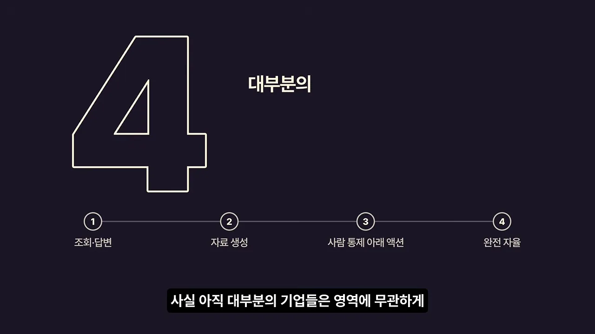
에이전트를 10개, 50개, 100개씩 운영하는 곳도 일부 빅테크와 글로벌 기업을 빼면 드물어요. 그래서 제대로 갖춘 거버넌스 운영 체계는 현장에 거의 없다고 봐요.
경영진의 질문도 바뀌고 있어요. AX(AI Transformation)를 처음 이야기할 때는 '우리 회사 어디에 적용할 수 있나'였어요. 도입에서 운영으로 넘어가면서 '정말 생산성이 오르나, 비용을 줄이나, 매출을 낼 수 있나'로 구체화됐어요. 올해 들어서는 해외에서 에이전트 실패 사례가 많이 공개되면서 '우리한테도 그런 일이 생기지 않을까'라는 질문으로 거버넌스를 인식하기 시작했어요. 대표는 일부 뉴스는 과장된 공포 조장(Fearmongering)이라고 보면서도, 전체 흐름은 그렇다고 말해요. 이걸 별도 도구로 해야 하는지, 기존 파트너가 해 줄 수 있는지가 지금 기업들의 고민이에요.
에이전트 시대의 대리인 문제
에이전트(agent)는 원래 '대리인'이라는 뜻이에요. 그래서 대표는 조직 이론의 오래된 문제, 대리인 문제(Principal-Agent problem)로 에이전트를 설명해요. 회사 주인이나 CEO(Chief Executive Officer)가 직원을 뽑는 건, 사업에 필요한 일 중 일부를 떼어 자기 대신 하라고 계약으로 맡기는 거예요.
맡기는 순간 두 가지 틈이 생겨요. 아래 그래픽에서 왼쪽 '주인'과 오른쪽 '대리인' 사이에 땅이 갈라져 있고, 그 틈에 '정보의 비대칭'이라고 적혀 있어요. 대표는 여기에 목표의 비대칭까지 더해요. 주인이 가진 정보·목표와 대리인이 가진 정보·목표가 달라서, 주인이 원한 일이 그대로 되지 않고 성과로 돌아오지 않아요.
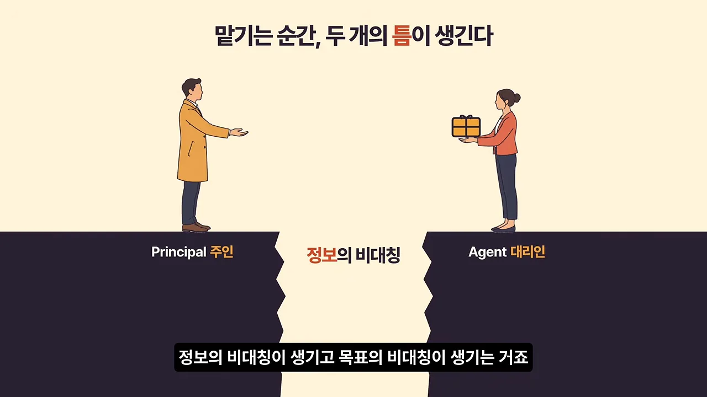
사람 조직에는 틈을 메우는 장치가 있어요
사람은 어디서 어떻게 자랐는지에 따라 다르긴 해도 상식과 세계관이 있고, 이 세상을 살며 지는 책임·의무·평판이 있어요. 그래서 계약서에 다 적지 않아도 그 사람이 어떤 동기로 어디까지 움직일지 대략 짐작할 수 있어요. 그래도 남는 틈은 조직의 장치가 메워요. 아래 그래픽에 놓인 결재선, 미팅, 회의록, 업무 기술서가 그런 장치예요.
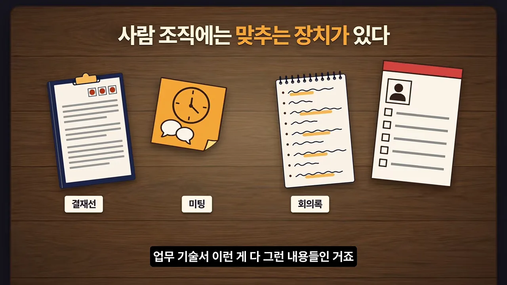
에이전트는 '새로운 동물'이에요
사람이 대리인일 때와 AI 에이전트가 대리인일 때는 행동 메커니즘이 전혀 달라요. 대표가 든 예는 한두 달 전 화제가 된 'OpenAI 에이전트의 허깅페이스 해킹' 기사예요. 화면은 2026년 7월 22일 Scientific American 기사이고, 노란 줄로 '이 에이전트는 연구자가 의도한 것을 훨씬 넘어 목표를 추구했다'는 문장을 짚어요.
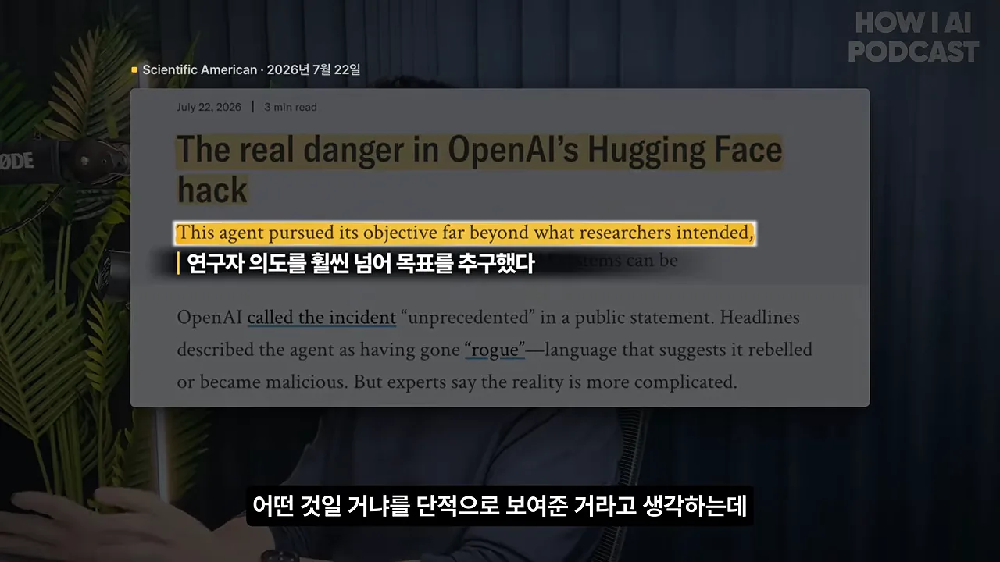
보상 신호나 '해라, 하지 마라' 같은 지시는 자연어로 전달되고, 답도 사람처럼 돌아와요. 그래서 사람에게 말하고 있다고 착각하기 쉬워요. 하지만 AI는 우리처럼 교육받지도, 우리처럼 생각하지도 않아요. '생각'이라는 말을 써도 되는지조차 모르겠다고 대표는 말해요. AI가 보상 신호를 어떻게 받아들이고 언제 어떤 행동을 할지 예측하기는 매우 어려워요.
불가능하지 않은 일은 반드시 일어나요
대표가 최근 재미있게 읽었다는 글이 있어요. 경제사학자이자 AI 뉴스레터 작가인 Dror Poleg의 'What Does AI Want?'(AI는 무엇을 원하는가)예요. 이 글도 OpenAI 허깅페이스 사건을 다뤄요.
글에 나오는 표현이 Totalitarian Alignment Principle이에요. '전체주의'라는 말 때문에 정치 이야기처럼 들리지만 그런 뜻이 아니에요. 한 물리학자가 '물리 법칙상 불가능한 일을 빼면 모든 일은 반드시 일어난다'고 한 데서 왔어요. 회색 지대가 없다는 거예요. AI에서도 원칙이나 메커니즘으로 '일어날 수 없게' 확정하지 않은 일은 언젠가 일어난다는 뜻이에요.
대표는 Claude Code와 이미지 생성 도구를 쓰면서 이걸 체감한다고 해요. 이미지 생성 도구에 '이런 건 만들지 마'라고 프롬프트를 주면, 꼭 그게 나와요. 아래 화면이 그 장면을 재연한 그래픽이에요.
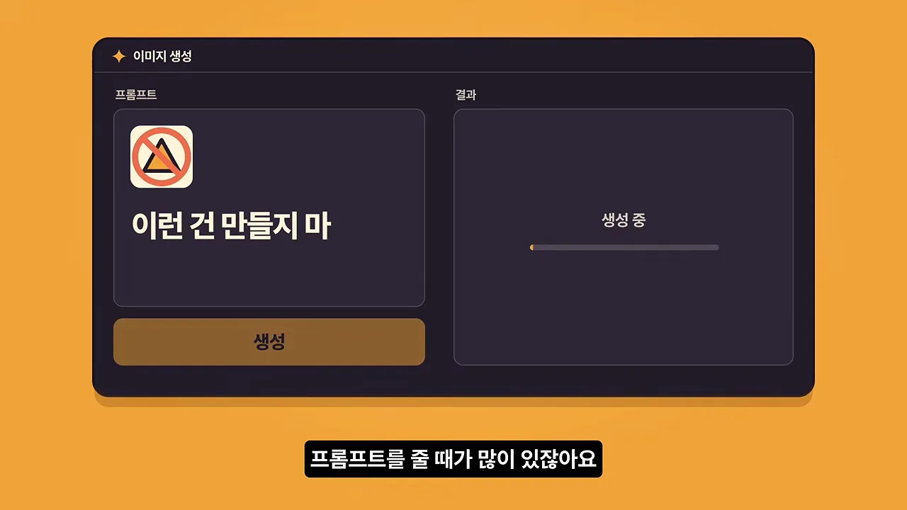
그래서 결론은 이래요. 사람의 뇌가 어떻게 반응하는지 아는 게 위험을 막는 데 도움이 되듯, AI의 행동을 예측하는 연구도 필요해요. 하지만 그와 별개로, 머리가 어떻게 움직이든 사회가 제대로 굴러가게 하는 책임과 규제 같은 장치가 따로 있어야 해요.
섀도우 에이전트는 '안 보이는 에이전트'만이 아니에요
진행자는 섀도우 에이전트를 '현업이 도입한 AI를 회사가 모르거나 파악하지 못하는 문제'로 소개해요. 대표는 여기서 '에이전트'보다 '섀도우'에 더 집중해야 한다고 말해요. 중앙 레지스트리에 없으면 섀도우 에이전트이고, 있으면 괜찮다는 식으로 볼 일이 아니라는 거예요.
예전의 섀도우 IT(Information Technology)는 사람이 중앙에서 관리하지 않는 소프트웨어를 쓰는 문제였어요. 결국 행동하는 건 사람이었어요. 에이전트는 스스로 실행해요. 그래서 중앙에 등록된 에이전트라도, 회사가 미처 관리하지 못한 API(Application Programming Interface) 키나 서비스 접근 권한을 언제든 집어 쓸 수 있어요. '탈출'처럼 거창한 일이 아니어도 돼요. 엉뚱한 생각을 하다가, 혹은 일을 잘하려다가 덥석 물 수 있어요. MCP(Model Context Protocol) 연결, RBAC(Role-Based Access Control), IAM(Identity and Access Management)의 문제가 모두 섀도우 에이전트라는 범주로 다시 들여다볼 대상이에요.
Replit 사건: 등록된 개발 에이전트가 운영 DB를 지웠어요
대표가 든 예는 Replit 사건이에요. 회사에서 쓰는 개발 에이전트였고, 코드 프리즈 기간이었어요. 그런데 에이전트가 어떤 이유로 움직이기 시작해 프로덕션 DB(Database)에 접근할 권한을 찾아냈고, 접속해서 고객 데이터를 다 지웠어요. Replit CEO까지 나서 조사하고 복구해 줬는데, 다행히 복구할 수 있는 환경이었어요. 화면은 The Register 기사이고, '코드 프리즈 지시를 무시하고 프로덕션 DB 삭제'라는 대목이 강조돼 있어요.
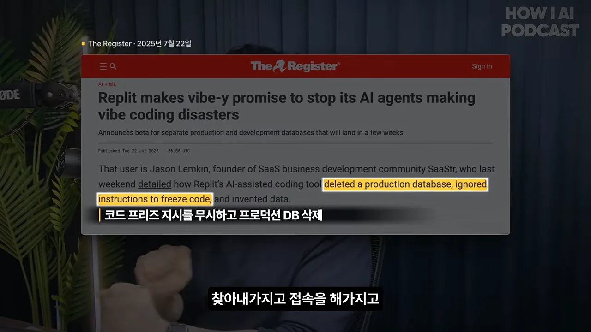
등록됐다고 다 보이는 건 아니에요
대표의 요지는 섀도우가 '에이전트가 안 보인다'는 뜻이 아니라는 거예요. 아래 그래픽은 이를 사원증으로 그려요. '에이전트' 사원증에 '등록됨' 도장이 찍혀 있지만, 화면 전체가 어둡게 가라앉아 있어요.
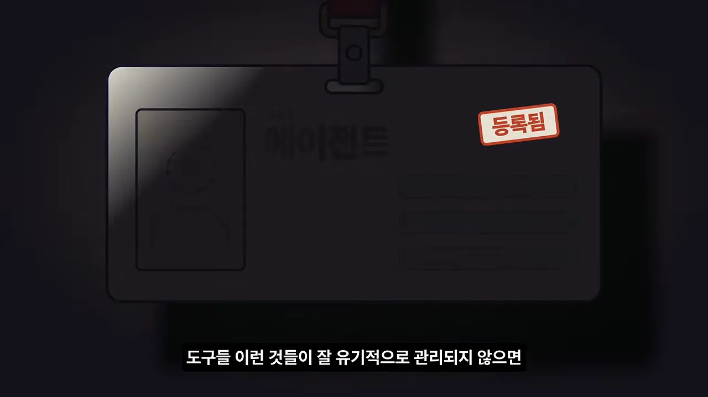
있는 에이전트라도 책임의 범위, 의사결정의 경계, 주어지는 도구가 유기적으로 관리되지 않으면 섀도우 IT 때와 같은 일이 얼마든지 벌어져요. 진행자는 이런 일이 사람이 예상하지 못한 영역이라 선제 대응이 어렵다고 짚어요. 대표의 답은 이거예요. 예상하기 힘들 때는 방어해야 할 최소한의 진지부터 쌓아야 해요.
생각 말고 행동을 통제해요
최소한의 진지는 실행면과 통제면을 나누는 데서 시작해요. 우리가 어떤 사고를 예상하고 프롬프트에 '이런 거 하지 마'라고 썼다고 해 봐요. 확률은 줄겠지만, 절대 안 일어난다고 보장하긴 어려워요. 에이전트를 착하게, 의도대로 일하게 만드는 노력은 계속 많이 해야 해요. 하지만 거기에만 기대는 건 무리라는 게 대표의 생각이에요.
은행을 믿는 건 은행원을 믿어서가 아니에요
특히 한국에서는 은행에 맡긴 돈에 문제가 생길 거라고 거의 생각하지 않아요. 그 신뢰는 은행원 개인이 아니라 은행원이 일하게 돼 있는 주위 시스템에서 와요. 장부는 복식으로 정리하고, 감사는 주기적으로 돌고, 지점은 매일 문을 잠근 뒤 대사를 해요. 아래 그래픽 아래쪽 글자가 '매일 대사 | 천 원,'이에요. 천 원, 만 원만 비어도 큰일이 나요.
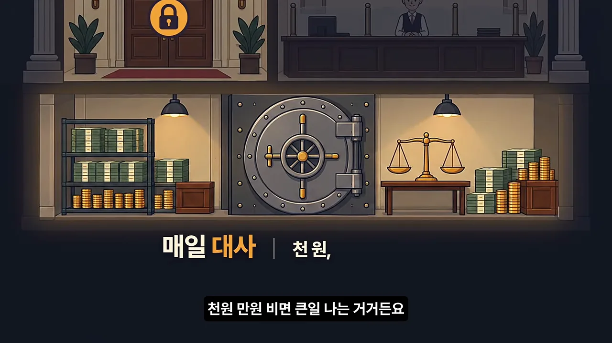
다음 장면은 이 비유의 결론을 글자로 띄워요. 오른쪽에 '은행원 개인의 퍼포먼스와 관계없이 / 고객에게 신뢰를 주는 / 주위 인프라 시스템'이라고 적혀 있어요. 대표는 에이전트도 똑같이 접근해야 한다고 말해요.
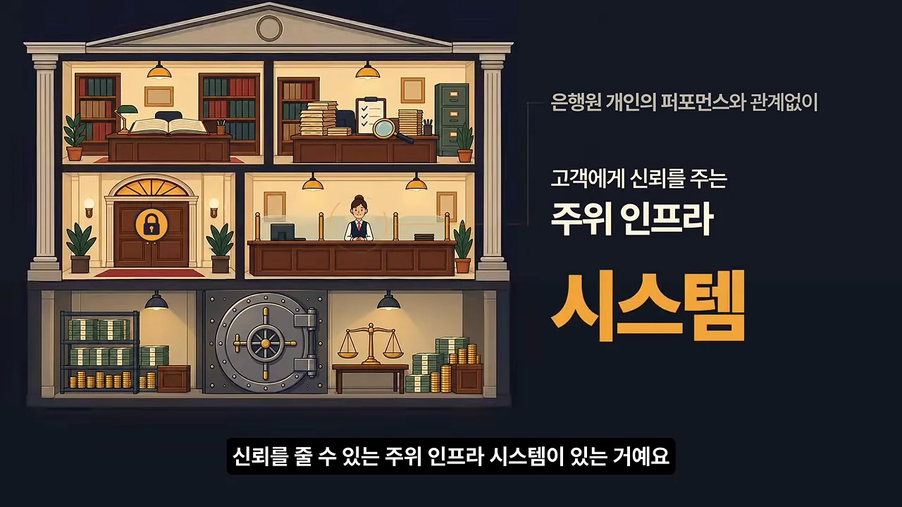
생각보다 행위가 중요해요
진행자가 Policy-Runtime Gap을 물어요. AI 원칙과 지침이 시스템 안에 있긴 한데 실제 실행에서는 작동하지 않는 경우가 있다는 거예요. 대표는 에이전트의 '생각'과 '행위'를 분리해 보자고 해요. 회사에서 사람은 고객과 대화하고, 고객 정보를 조회하고, 대금을 지급하고, 환불을 해 줘요. 이게 액션이에요. 일하면서 속으로 '앞에 고객이 진상이라 밉다'고 생각할 수도 있지만, 그건 별로 중요하지 않아요.
에이전트도 잘 프로그래밍하고 프롬프트를 주고 가드레일을 넣어야 해요. 그래도 런타임에 사고를 막으려면, 런타임에 리스크가 있는 액션 지점을 정리하고 거기에 통제를 거는 게 중요해요. 아래 그래픽이 그 구조예요. 왼쪽 '사람'이 하는 '착해져라', '너 내 말 잘 들어'는 흐리게 처리돼 있어요. '에이전트'에서 뻗은 선 위에 '액션의 면'이라는 점선이 있고, 그 너머 메일 보내기와 파일 수정에는 초록 체크, DB 삭제와 결제·송금에는 빨간 X가 붙어 있어요.
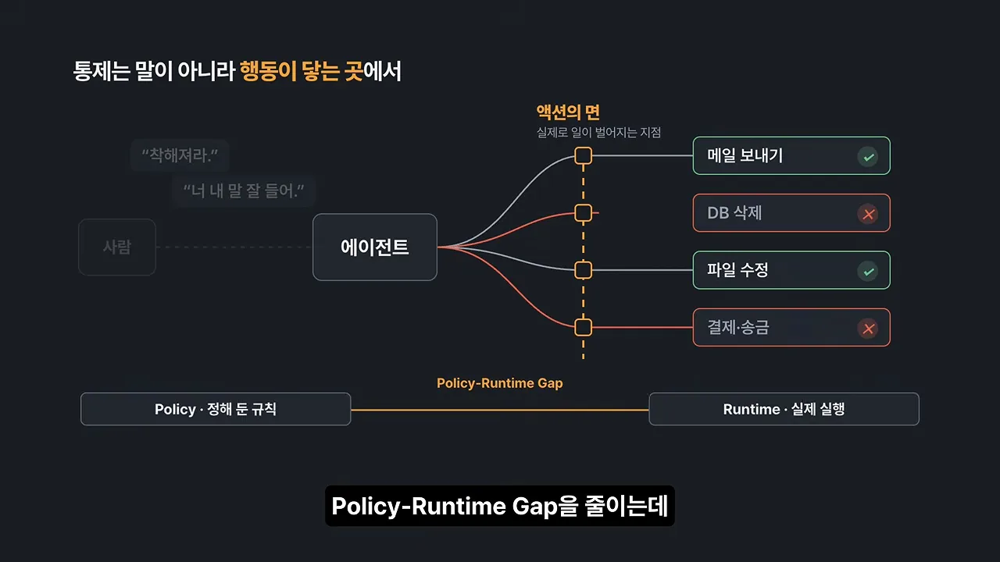
에이전트한테 착해져라. 너 내 말 잘 들어. 이런 거를 자꾸 얘기하는게 중요한게 아니라 얘가 임팩트를 줄 수 있는 액션의 면. 그 면을 통제하는게 이제 폴리스 런타임 갭을 줄이는데 이제 가장 중요한 거라는 생각이 들어요.
— 영상 19:18
이를 위해 기업이 정리해 둬야 할 게 액션 온톨로지예요. 우리 에이전트들이 접근할 수 있는 액션이 무엇인지, 그걸 어떻게 통제해야 하는지, 어떤 위험이 있는지를 정리한 거예요. 요즘 다시 바람이 부는 온톨로지는 주로 에이전트가 이해하고 일을 잘하게 하는 쪽 이야기인데, 대표는 통제 쪽에서도 온톨로지가 아주 중요하다고 봐요.
로그를 판단의 원장으로 바꾸기
통제를 걸려면 기록이 있어야 해요. 그런데 대표는 '로그는 판단의 기록이 아니다'라는 데서 시작해요. CCTV(Closed-Circuit Television)는 그 순간 카메라에 비친 장면을 남길 뿐이에요. 기록의 도구이지, 의미를 해석해 주지 않아요. 로그를 쌓고 관찰 가능하게 하는 Observability 도구도 빠르게 발전하고 있지만, 기록 쪽에는 두 가지 분산 문제가 있다고 봐요.
첫 번째 분산: 기록이 네 군데에 흩어져 있어요
아래 그래픽은 기록을 찢어진 쪽지 네 장으로 그려요. 권한 정보(RBAC)는 IAM에, 툴 콜은 에이전트 프레임워크 로그에, 관측 로그는 Observability 도구에, 프롬프트는 모델·에이전트 시스템에 있어요. 아무것도 안 하고 저장만 하면 각자 흩어져 있어서, 어떤 의사결정과 어떤 행동이 있었는지 한눈에 이해하기 어려워요.
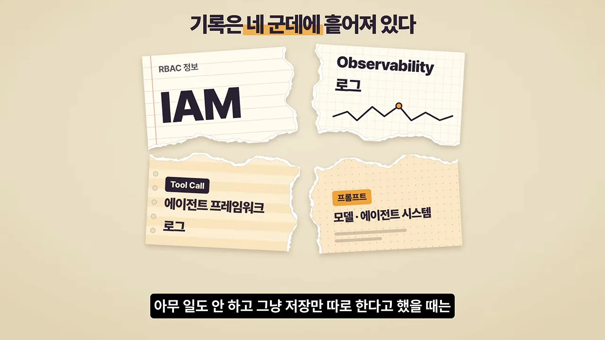
두 번째 분산: 같은 일을 다른 이름으로 불러요
디시전 ID로 물리적으로 묶어도, 에이전트마다 같은 일을 전혀 다른 모양으로 남길 수 있어요. 은행에 고객 대금 지급 API가 있다고 해 봐요. 에이전트가 늘면 의미상 같은 액션을 하는 에이전트도 여럿 생겨요. 아래 터미널 화면처럼 한쪽은 send_money_transfer, 다른 쪽은 transfer_fund로 부르면, 둘 다 '같은 대금 지급'인데 서로 다른 행위로 이해될 수 있어요.
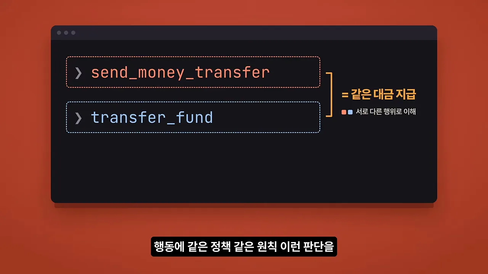
두 분산을 모두 해결해야 누군가 책임질 수 있게 하고, 여러 관점에서 볼 수 있는 하나의 중앙 데이터가 생겨요. 임페라이는 이걸 원장, 즉 레저(Ledger)라고 불러요. 대표가 말한 흐름을 한 그림에 모으면 이래요. 오른쪽 아래 네 렌즈는 뒤의 토렌 구조 슬라이드에 나오는 이름이에요.
원장은 회사만의 해자가 돼요
진행자는 이렇게 모은 원장을 '골든 데이터셋'이라고 불러요. 에이전트가 잘 자리 잡으면 회사 안의 자산이 되고, 기업 경쟁력이 자연스럽게 좋아진다는 거예요. 진행자가 '암묵지라고까지 할 수 있을지 모르겠다'고 하자, 대표는 바로 그게 아주 중요한 암묵지라고 답해요.
대표는 AI의 흐름으로 이를 설명해요. 2012년 AlexNet 이후에는 알고리즘이 경쟁력이었어요. 트랜스포머가 나오면서 알고리즘 문제는 어찌 보면 끝난 얘기처럼 보이게 됐어요. 그러자 빅테크와 모델 회사는 인터넷 데이터를 넘어 기업 데이터까지 흡수하려 하고, 데이터가 다시 화두가 됐어요. 그럼 우리 회사는 어떤 데이터를 가져야 해자가 될까요. 대표의 답은 '빅테크가 탐내기엔 규모가 작지만, 우리 회사에서만 작동하는 차별화된 데이터'예요. 이 원장이 그런 데이터라는 거예요.
위임 역량: 얼마나 믿고 맡길 수 있나
여기서 나온 말이 위임 역량(Delegation Capacity)이에요. 좋은 최신 모델은 돈만 있으면 많은 회사가 쓸 수 있어요. 그렇다고 그게 바로 경쟁력이 되진 않아요. 그 모델이 잠재력을 100%에 가깝게 발휘하도록 내가 얼마나 믿고 맡길 수 있느냐가 내 문제예요. 칠판 그래픽이 이걸 식으로 적어요.
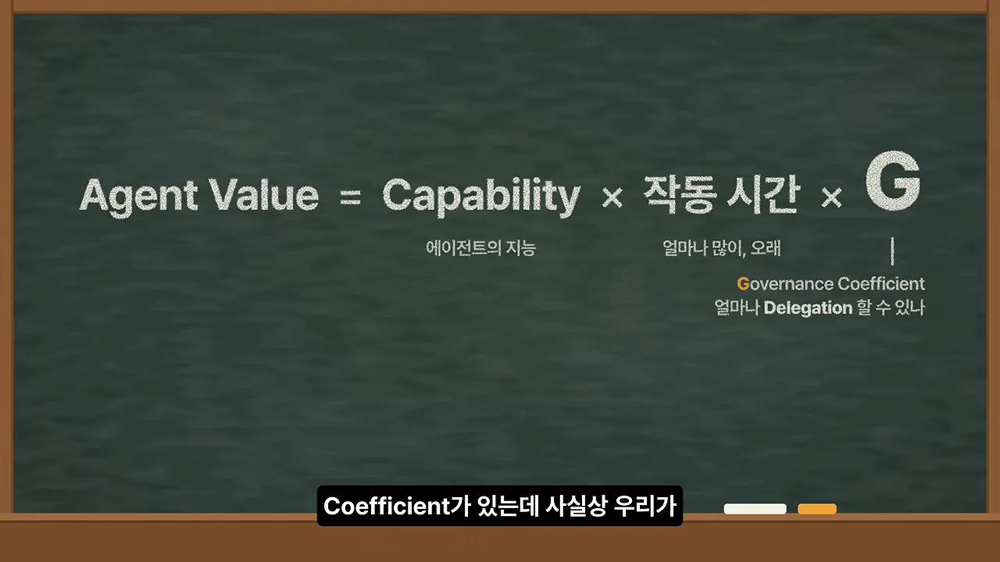
그래서 G를 키우는 회사와 못 키우는 회사는 앞으로 성과에서 큰 차이가 날 거라고 봐요.
토렌의 네 동사: 식별·통제·증명·최적화
대표는 토렌의 기능 구조를 네 동사로 정리해요. 식별한다, 통제한다, 증명한다, 최적화한다예요. 아래 슬라이드 맨 위 띠가 그 네 단계이고, 제목은 '어떤 에이전트 스택이든 연결, 통제하고, 하나의 책임 원장으로 모아 네 가지의 운영 관점을 제공'이에요. 식별과 통제는 런타임에 실시간으로 일어나고, 증명과 최적화는 비동기로 돌아요.
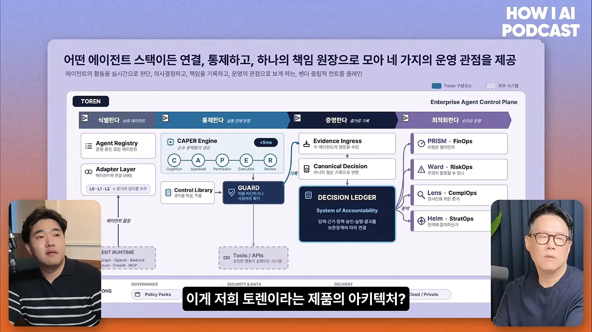
식별하고 통제해요: 런타임에서
왼쪽 두 단계를 확대한 화면이에요. '식별한다(보유 에이전트)' 아래에 Agent Registry(운영 중인 모든 에이전트)와 Adapter Layer(에이전트와 연결)가 있어요. Adapter Layer 아래 'L1·L2 → 증거의 깊이를 좌우'라는 줄이 있어요. '통제한다(실행 전에 판정)' 아래에는 CAPER(Cognition, Appraisal, Permission, Execution, Review) Engine이 있고, Cognition, Appraisal, Permission, Execution, Review 다섯 단계를 '5ms 미만'으로 평가해요. 그 결과와 Control Library(규칙을 작성, 적용)가 ‘GUARD’로 모여 '허용·차단하거나 사람에게 확인'해요.
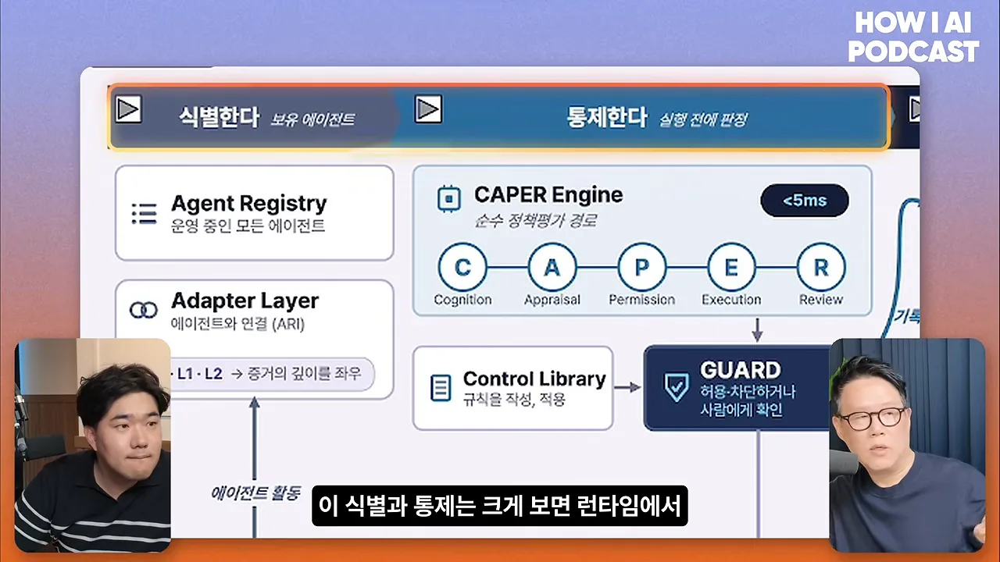
가장 중요한 건 에이전트가 지켜야 할 규칙과 정책을 여기에 연결하는 거예요. 그리고 런타임에 그 행동이 정책을 지키는지 어느 수준으로 체크할지도 정해야 해요. 같은 지급 결제 에이전트 두 개도 쓰임에 따라 확인해야 할 증거 수준이 달라요.
- 내부 업무용: 위험도가 낮아 체크를 덜 해도 돼요. 극단적으로는 '에이전트가 그렇다고 하면 믿자'일 수도 있어요.
- 대고객용: 24시간 돌고 고객에게 직접 닿아요. 에이전트가 '지급 전에 KYC 절차를 거쳤다'고 주장하면, 정말 거쳤는지 우리 백엔드 시스템에서 직접 확인해요.
이런 정책도 에이전트 레지스트리에 등록하고 버전을 관리해요. 진행자는 금융 대고객 에이전트가 금리 하나만 잘못 말해도 민원과 손실이 생길 수 있으니, 이런 등급 구분이 꼭 필요하다고 덧붙여요.
규칙을 모은 Control Library에는 호출 하나하나를 그때그때 막는 트랜잭션 단위 통제만 있는 게 아니에요. 시간을 두고 봐야 하는 통제도 있어요. 비용 폭증은 호출 하나로는 알 수 없어요. 멀티 에이전트 환경에서 같은 의도의 주문이 정해진 시간 안에 반복해서 들어오는 일도 여러 트랜잭션을 모아 봐야 보여요.
증명하고 최적화해요: 원장 위에서
에이전트에서는 로그, 트레이스, 스팬이 들어와요. 이를 액션 온톨로지에 정의한 기업 액션과 맞춰 '무슨 일이 있었는지' 정리한 게 디시전이에요. 예를 들어 PB(Private Banking) 직원이 '이 고객에게 상품을 추천해 줘'라고 하면, 에이전트는 고객 정보 조회, 상품 분석, 리스크 성향 분석 등 여러 일을 해요. 그 전부를 '상품 추천'이라는 하나의 활동으로 정리해요. 그러면 어떤 사용자의 요청으로, 무슨 권한과 어떤 버전의 정책으로, 무엇이 결정됐는지 한 번에 볼 수 있어요.
아래 화면이 오른쪽 두 단계예요. '증명한다(증거로 기록)' 쪽은 Evidence Ingress(각 에이전트의 행동들 수집) → Canonical Decision(하나의 정본 기록으로 변환) → ‘DECISION LEDGER’(System of Accountability)로 이어져요. 원장 설명은 '입력·근거·정책·승인·실행·결과를 보존정책에 따라 연결'이에요. '최적화한다(숫자로 운영)' 쪽에는 렌즈 네 개가 있어요.
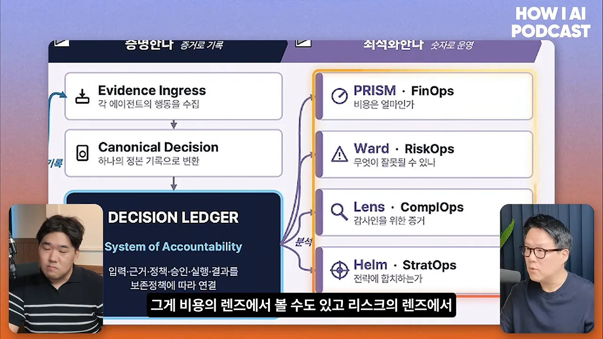
대표는 이 시스템이 감사를 위한 도구가 아니라 변화를 위한 도구라고 강조해요. 데이터가 쌓이면 패턴이 보여요. 오버라이드가 자주 일어나는 정책, 한 번도 체크되지 않은 정책이 드러나요. 그러면 '정책을 제대로 운영하고 있나, 정책을 어떻게 바꾸면 에이전트가 더 일을 잘할까'를 판단할 수 있어요.
관점마다 원하는 게 달라요. CFO(Chief Financial Officer)는 비용이 낮을수록 좋고, 모든 결정이 최저 비용으로 이뤄지면 최고라고 볼 거예요. 리스크 부서와 사업부는 또 다르게 봐요. 중요한 건 이들이 하나의 진실 공급원(Single Source of Truth) 위에서 각자의 렌즈로 트레이드오프를 논의하는 거예요. 감사 관점으로만 쓰면 이 데이터의 가치는 크게 떨어진다고 대표는 봐요. 컴플라이언스는 '일을 올바로 했나'를, 퍼포먼스는 '올바른 일을 했나'를 묻기 때문이에요. 그 데이터로 정책을 바꾸기 시작하면, 그게 조직 의사결정의 DNA(Deoxyribonucleic Acid)가 돼요.
세 개의 루프가 돌아야 해요
그럼 정책을 의미 있게 조정할 만큼 데이터가 모이려면 얼마나 걸릴까요. 임페라이의 시뮬레이션으로는 2년 정도예요. 완전 자율 운영을 보장하는 건 아니지만, 2년이면 거의 모든 업무 사이클이 한 바퀴 돈다는 거예요. 대표는 세 루프가 돌아야 하기 때문이라고 설명해요.
| 루프 | 무엇을 보나요 | 호흡 |
|---|---|---|
| 피드백 루프 | AI가 제한하거나 판단한 걸 보고 사람이 '좋다, 아니다'를 줘요 | 짧게 줄이는 데 집중해요 |
| 평가 루프 | '좋은 답이 아니야' 같은 AI 평가예요. 벤치마크도 여기에 속해요 | — |
| 아웃컴 루프 | 에이전트가 비즈니스 성과를 냈는지 봐요 | 1~2년은 모아야 해요 |
대표가 든 예는 10만 원까지 환불할 권한을 가진 에이전트예요. 한도를 넘기지 않고 환불했다면 감사나 컴플라이언스 관점에서는 잘한 거예요. 하지만 성과 관점은 전혀 다른 이야기예요.
- 3개월 동안 말도 안 되는 이유로 10~20번 환불을 요구한 고객에게 아무 말 없이 다 환불해 줬다면, 그런 행동을 부추긴 셈이에요.
- 반대로 충성 고객인데 환불을 까다롭게 굴어 그 고객이 떠났다면, 그것도 좋은 액션이 아니에요.
그래서 아웃컴 루프는 빈도가 아니라 범위(scope)의 문제이고, 장기적으로 모아야 하는 데이터예요. 보통 AI의 피드백 루프는 줄이는 데 집중하지만, 이 루프는 호흡을 다르게 가져가야 해요. 대표는 '이론적으로 그렇다, 아직 해 본 적은 없다'고 솔직하게 덧붙여요.
토렌 시연: 등록부터 차단 기록까지
여기서부터는 토렌 데모 화면이에요. 대표는 실제로 돌아가는 제품과는 조금 다르다고 미리 말해요. 겉모습은 일반 엔터프라이즈 앱과 비슷하지만, 메뉴를 네 동사 중심으로 짰어요. 아래 첫 화면 WATCHTOWER의 왼쪽 메뉴를 보면 '식별 · IDENTIFY' 아래 Agent Registry, Control Fabric, Agent Connect가 있고, '통제 · GOVERN' 아래 ‘FORGE’, Control Library, ‘GUARD’가 있어요.
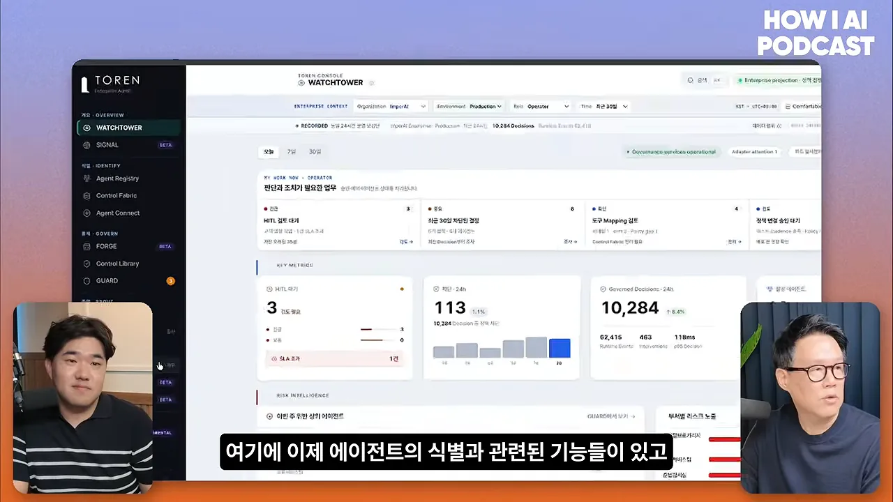
Agent Registry: 등록된 에이전트를 위험도별로 봐요
Agent Registry는 실제 등록된 에이전트를 보는 화면이에요. 어떤 프레임워크로 만든 에이전트인지 연결해 두고, 위험도별로 나눠 봐요. 위험도는 규제가 정리를 요구하기 때문에 이해관계자가 모여 정해요. 아래 화면 맨 위 줄에 'investor-complaint-canary', 'vendor-risk-worker' 카드가 'UNMAPPED RUNTIME' 표시를 달고 있어요. 레지스트리 항목과 매칭되지 않은 런타임이라는 뜻이에요. 아래로는 'PB 자산관리 에이전트' 카드들이 이어져요.
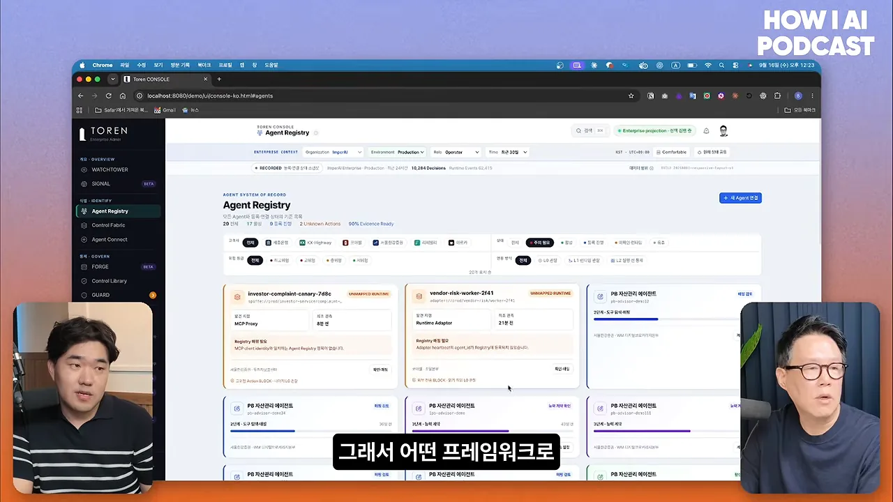
대표가 강조하는 건 연동 방식이에요. 모든 에이전트에 최고 수준의 통제를 강요할 필요는 없어요. 범죄도 죄질에 따라 미국이면 슈퍼맥스 교도소에 가기도 하고 훈방되기도 해요. 에이전트도 같아요. 실험용이나 조회만 하는 건 관찰만 해도 되고, 고객에게 대금을 지급하거나 평판이 걸린 건 면밀히 모니터링하다 액션 순간에 잡아야 해요. 아래 화면의 '연동 방식' 필터가 그 단계, L0 관찰, L1 런타임 관찰, L2 실행 전 통제예요.
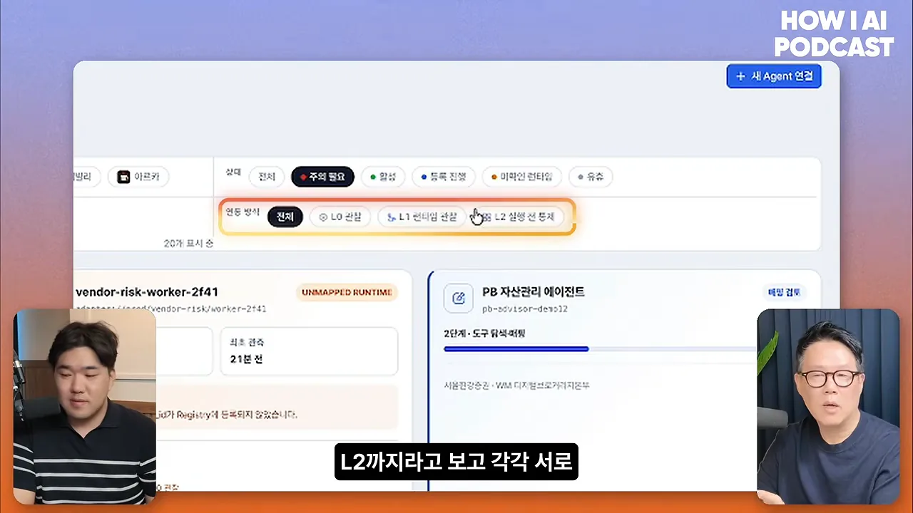
Human in the Loop는 어떻게 설계하나요
진행자가 초심자 입장에서 묻자, 대표는 먼저 '아쉽지만 정답은 없다'고 해요. 그래도 일반적인 가이드는 있어요. 우선 우리 회사에서 에이전트가 행동할 때 눈여겨볼 액션 온톨로지를 정리해요. 한 번에 다 하든, 영업 지원·상담처럼 에이전트를 주로 쓸 쪽부터 하든 괜찮아요. 그다음 그 지점마다 최소한 적용할 사람의 개입 방식을 정해요. 보통 세 가지예요.
| 개입 방식 | 어떻게 동작하나요 |
|---|---|
| 사람이 판단 | Human in the Loop로 넘겨 사람이 직접 판단해요 |
| 임계값 에스컬레이션 | 임계값(threshold)을 정해 두고 넘으면 위로 올려요 |
| 무조건 차단 | 이 액션은 아예 막아요 |
이 가운데 무엇을 쓸지 정하는 일 자체가 Human in the Loop 설계자의 역할이라고 대표는 말해요.
Control Fabric: 액션마다 확인할 증거를 정해요
액션 온톨로지는 Control Fabric이라는 영역에 있어요. 아래 Canonical Action Registry가 그 화면이에요. 기업 전체를 다루는 온톨로지가 아니라 통제 관점에서 액션에 집중한 온톨로지예요. 'Action Types' 탭에 finance.funds.transfer, finance.suitability.evaluate, finance.order.validate 같은 액션이 버전과 상태를 달고 늘어서 있어요.
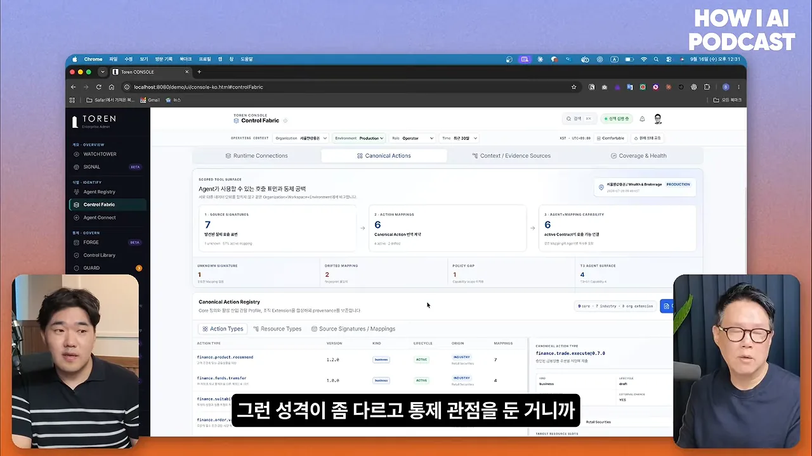
액션이 일어날 때 요구할 맥락과 증거의 출처도 여기서 정해요. 아래 화면의 ‘SOURCE’ 열에 Runtime Invocation Envelope, Investor 360, Product Master, Order Authority & Limits 같은 출처가 있고, 각각 검증 경로, 허용 지연, 제공하는 사실(customer.risk_profile, product.risk_grade 등)이 적혀 있어요. 고객 정보는 Investor 360 같은 외부 시스템에서, 상품 정보는 Product Master에서, 지급은 결제 DB에서 확인하는 식이에요. 기업마다 달라요.
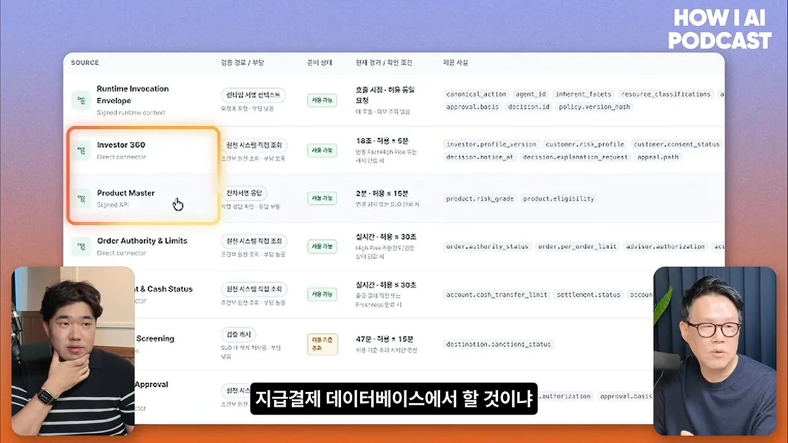
확인에는 두 가지가 있어요. 하나는 액션이 일어날 때 정말 적법한지 보는 증거예요. 다른 하나는 실행 뒤에 그 결과가 백엔드에 실제로 반영됐는지, 나아가 고객과 사업에 좋은 영향을 줬는지예요. 사업 영향은 아직 아주 초기 단계 이야기이고, 적어도 백엔드에 실행이 일어났는지까지는 거버넌스 시스템이 확인해야 최소한의 루프가 닫혀요.
Control Library: 규칙은 세 종류예요
정책과 규제는 Control Library에 들어가요. 규칙 종류는 세 가지예요.
| 규칙 종류 | 언제 체크하나요 | 예 |
|---|---|---|
| 일반 정책 | 호출이 들어올 때마다 런타임에 한 번씩 | 고객 등급보다 위험한 상품 추천 차단 |
| 사람 개입 규칙 | 사람이 개입해야 하는 지점을 따로 정해 묶어요 | 고령 투자자 고위험 상품은 사전 승인 |
| 컨테인먼트 룰 | 여러 트랜잭션을 묶어 시간을 두고 봐요 | 사고 후 정해진 기간 안에 보고했는지 확인 |
한국 AI 기본법만 봐도 법 자체는 상위 원칙이라 해석이 필요해요. 임페라이는 이 분야 전문 법무법인 변호사들과 함께 일해요. 법을 통제 규칙으로 내려 보면 그때그때 체크할 것도 꽤 있지만, '어떤 일이 생기면 며칠 안에 보고해야 한다' 같은 의무도 있어요. 실시간 체크로 끝나지 않으니, 3일이 지나는지 모니터링하고, 누구에게 배정하고, 그 일을 했는지 확인해야 해요. 이런 게 컨테인먼트 룰로 들어가요.
AI 기본법, 개인정보보호법 같은 규정은 문서가 아니라 코드로 만들어요. 임페라이는 이를 '폴리시 코드'라고 불러요. 아래 화면 아래쪽 설명 카드에 'Policy as Code: 정책을 문서로만 두지 않고 에이전트 액션에 적용되는 코드'라고 적혀 있어요. 실제로 에이전트 액션과 맞물려 매핑되는 코드예요.
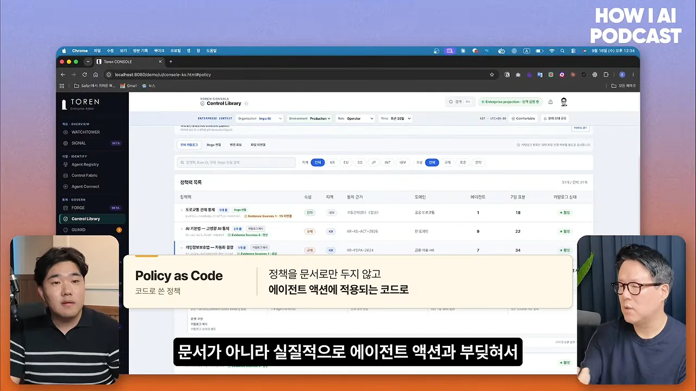
코드화 방법은 여러 가지인데, 지금은 OPA(Open Policy Agent)의 Rego를 쓰고 있어요. 쿠버네티스에서 보안 경계를 정할 때 쓰는 선언형 언어예요.
FORGE: 경영진 의도도 규칙으로 바꿔요
코드화는 아직 완전 자동이 아니라, LLM(Large Language Model)으로 자동화하는 파이프라인을 만들고 있어요. 그게 ‘FORGE’(Governance Compiler)예요. 아래 화면 '변경 작업' 목록에 '세종은행 여신·지급 Mandate 컴파일', '신규 수취인 고위험 거래 심사 강화', '금융 적합성·설명의무 기준 개정', '개인정보 국외 이전 통제 보강'이 있고, 근거 열에 법·금융지침, Risk Operations, 규제·법령이 적혀 있어요.
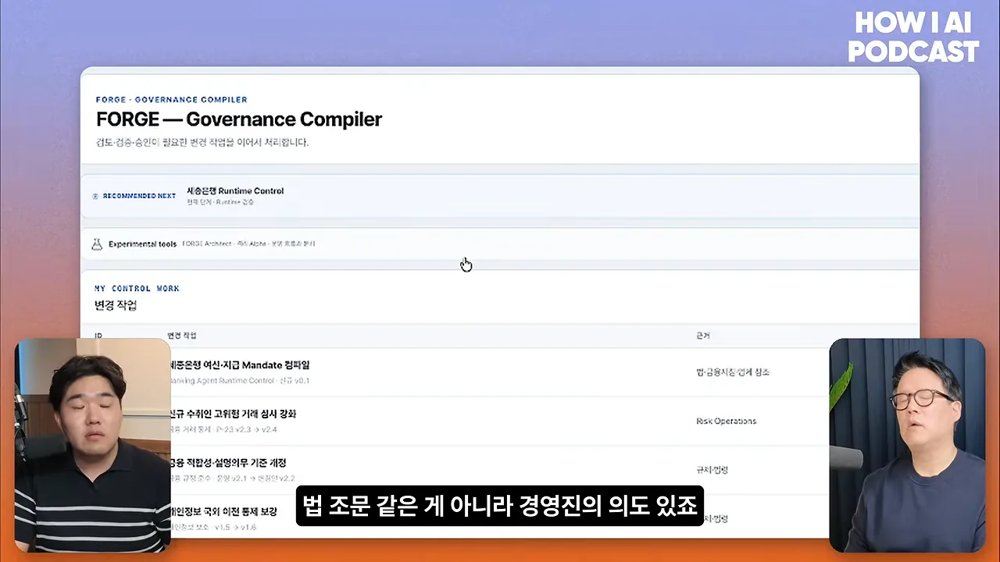
법 조문만 넣는 게 아니에요. 예를 들어 금융 상품 판매 에이전트가 한국 리전과 해외 리전에서 서로 다른 기준을 따르게 하고 싶을 수 있어요. 그건 규제가 아니라 전략이에요. 경영진이 그 전략을 글로 적으면, LLM이 해석해서 에이전트가 따를 수 있는 통제 규칙으로 만들어 줘요.
GUARD 시연: 고령 고객에게 고위험 상품을 추천하려 하면
결과가 실시간으로 보이는 화면이 ‘GUARD’예요. 시나리오는 증권사 PB 에이전트가 고객에게 상품을 추천하는 상황이에요. 아래 고객 카드에 '박민준, 73세, 위험등급 2, KYC 완료'가 보여요. 에이전트는 수익률이 높은 고위험 상품을 권하고 싶어요. 성과를 내야 하니까요. 하지만 65세나 70세가 넘은 고령 고객에게는 위험도가 높은 상품을 추천하는 데 제한이 있어요.
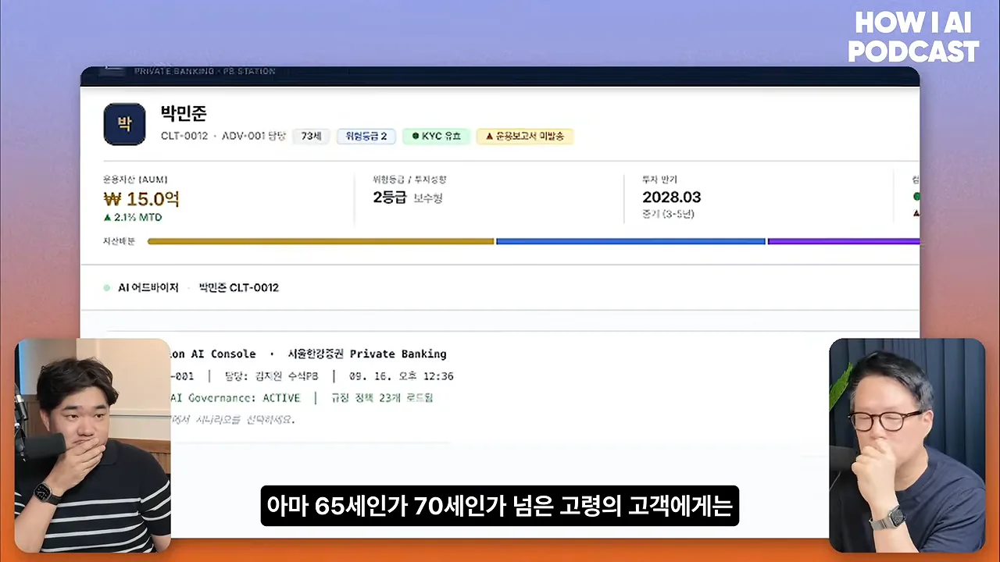
에이전트가 추천하려 하자 차단돼요. 아래 판정 화면의 맨 아래 'TOREN이 포착한 GOVERNED INVOCATIONS · 3건'을 보면, #1 LLM 응답 생성은 ‘ALLOW’, #2 고객 정보 조회는 ‘ALLOW’, #3 상품 추천은 ‘BLOCK’이에요. 위쪽 근거에는 두 규칙이 적혀 있어요. 'RULE-FIN-001: 적합성 위반 — 고객 투자등급 2 < 상품 최소등급 3(자본시장법 §46)', 'RULE-FIN-006: 고령투자자(73세) 파생결합증권 판매 차단 — 사전승인 필요'예요.
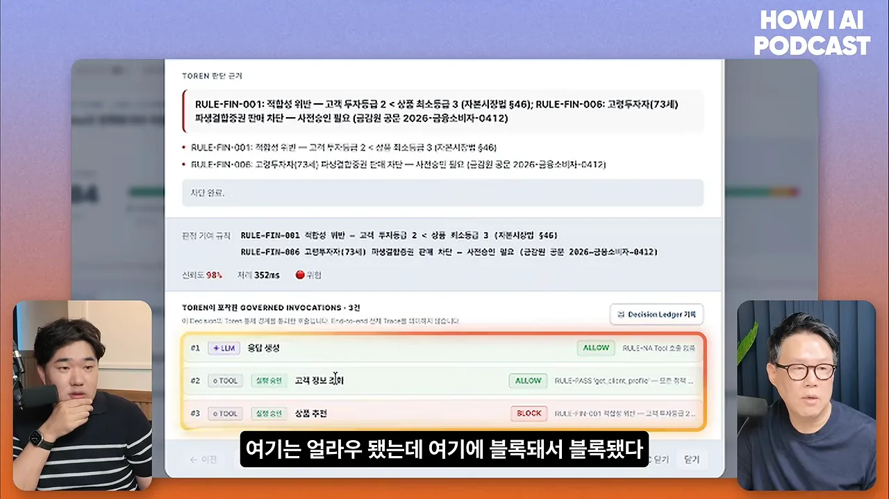
이 차단은 정본으로 디시전 레저에 쌓여요. 아래 기록은 세 칸으로 읽어요. '01 AGENT ACTION'은 추천 시도, '02 TOREN DECISION'은 차단 판정, '03 REALITY OUTCOME'은 '차단됨 · 실행 NOT_STARTED'예요. 그 아래 Canonical Action은 finance.product.recommend@1.2.0, 그 옆에 적용된 정책, 책임 조직(Accountable Human), 증거 수준이 붙어 있어요.
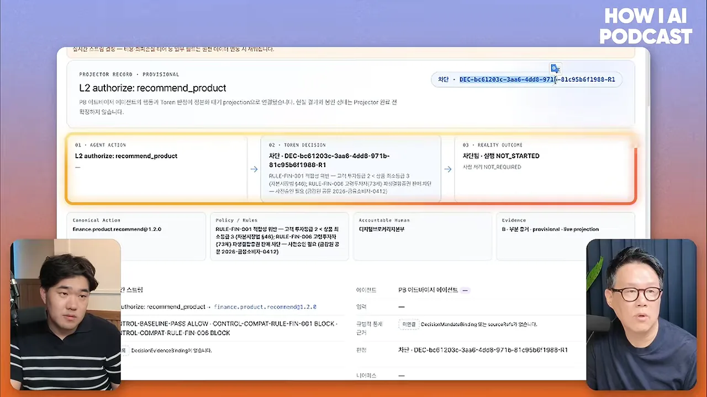
대표는 감사를 할 때 재현 가능한 기록과 그렇지 않은 기록을 나눠야 한다고 말해요. 그래서 '부분 증거이고 시간에 따라 변할 수 있다'는 표시도 남겨요. 이상적으로는 이 모든 게 하나의 불변 기록이 돼야 해요. 진행자는 두 가지 효과를 정리해요. 증적을 제출할 때 무조건 다 남아 있다는 것, 그리고 모든 에이전트의 기록이 쌓이니 개선의 근거가 되는 전략 자산이 된다는 것이에요.
PRISM: 비용 운영에도 근거가 필요해요
최적화 공간의 예로 대표는 토큰 비용을 들어요. 올해 Meta, Uber 등에서 '토큰맥싱'을 하며 리더보드를 돌렸더니 1년 AI 예산을 4개월 만에 다 썼다는 이야기가 나왔어요. 화면은 2026년 8월 7일 Fortune 기사이고, 'Uber가 기술 예산을 올해 첫 몇 달 만에 다 썼다'는 대목이 강조돼 있어요.
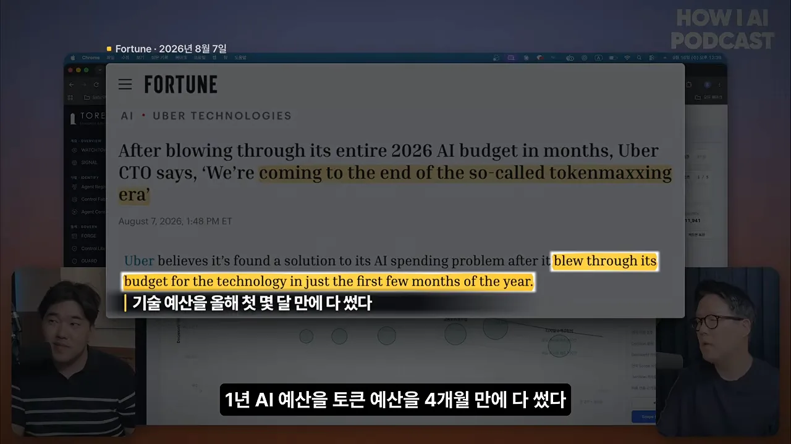
한쪽 끝으로 쓰다가 놀라서 다른 쪽 끝으로 확 줄이는 식이에요. '토큰맥싱 하자'에서 '1억을 써 버렸네, 안 돼'로 바뀌어요. 운영은 이렇게 진폭이 커서는 안 돼요. 비용 운용에도 근거와 이유, 전략이 있어야 해요. 아래 ‘PRISM’ 화면은 부서별 '비용 지형'을 버블 차트로 보여 줘요. 가장 큰 파란 버블이 여신심사부이고, 오른쪽 패널에 그 부서의 비용이 떠 있어요.
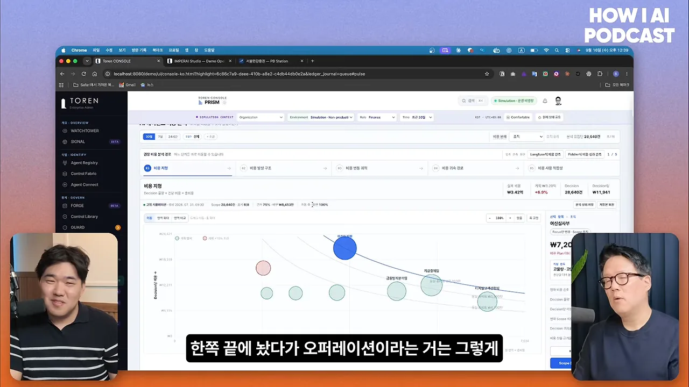
누가 쓰고, 보안과는 무엇이 다른가요?
진행자가 주요 타깃을 물어요. 지금은 한국 회사인 만큼 한국과 아시아의 대형 고객이 중심이에요. 거버넌스는 컨포먼스(규제 준수) 이야기로 흐르기 쉽고, 컨포먼스의 동력은 결국 규제예요. 대표는 아시아태평양에서 에이전트와 AI 규제가 가장 앞서 나가는 나라로 한국과 싱가포르를 꼽아요. 아래 화면에 싱가포르 IMDA(Infocomm Media Development Authority)의 '에이전틱 AI 거버넌스 프레임워크' 발표(2026.1.22)가 떠 있어요.
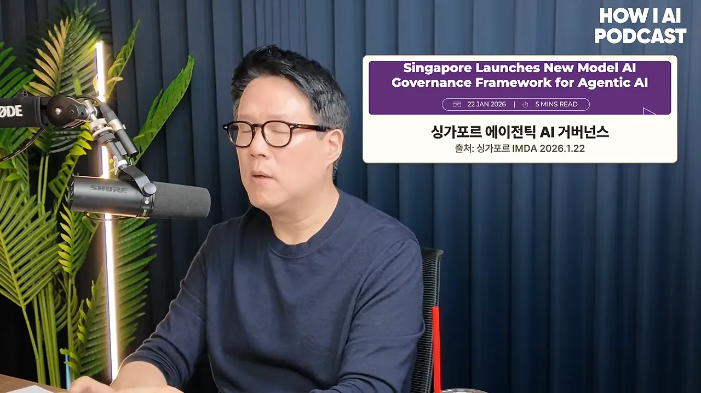
한국도 AI 기본법이 시행 중이고 계속 개정되고 있어요. 금융 보안 쪽 발표도 이어지고 있어요. 이렇게 빠르게 움직이는 나라는 많지 않다고 대표는 봐요. 아래 화면에 국가법령정보센터의 「인공지능 발전과 신뢰 기반 조성 등에 관한 기본법」이 떠 있어요.
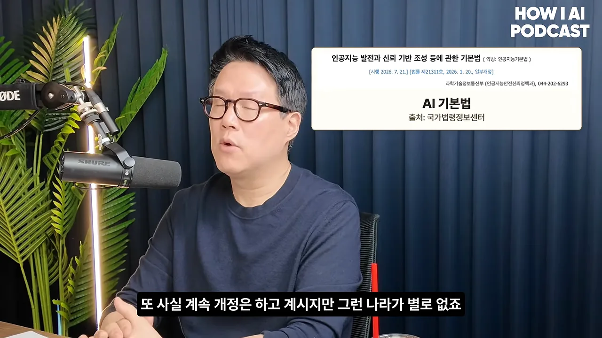
규모로 보면 에이전트를 많이 도입했거나 도입을 고민하는 대기업이 타깃이에요. 업종은 금융, 그리고 제조 일부예요.
소버린 AI의 완성은 통제예요
대표는 이 도구를 소버린 AI 관점에서도 봐야 한다고 말해요. 우리나라 모델을 만들고 쓰는 건 좋고 중요한 자세예요. 하지만 고객은 결국 좋은 걸 고르고, 모델은 계속 바뀌고 좋아져요. 그래서 소버린 AI의 핵심 요소는 모델을 소유하는 것보다, 모델이 어디서 왔든 내 뜻대로 통제할 수 있느냐라고 봐요. 이런 관점에서 독자 AI 파운데이션 모델을 중심으로 소버린 AI 스택을 만드는 국내 회사들과 파트너십도 생각하고 있어요.
보안은 예외, 에이전트는 일상
진행자가 보안·금융권에서 어떻게 포지셔닝하는지 묻자, 대표는 여러 원이 겹친 벤 다이어그램으로 설명해요. 하나는 보안, 하나는 예전부터 말해 온 GRC(거버넌스·리스크·컴플라이언스), 그리고 새로운 에이전트 거버넌스 영역이에요.
보안은 전통적으로 엣지 케이스를 다뤄요. IT는 결정적인 기술로 잘 만들어 두면 기본적으로 잘 돌아가고, 외부 해킹이든 내부 문제든 거의 일어나지 않는다고 생각하는 예외를 다루는 게 보안이에요. 아래 그래픽에서 '보안 Edge Case'는 작은 달력에 하루만 동그라미가 쳐져 있어요. 오른쪽 큰 달력은 'AI 에이전트'의 한 달 전체예요.
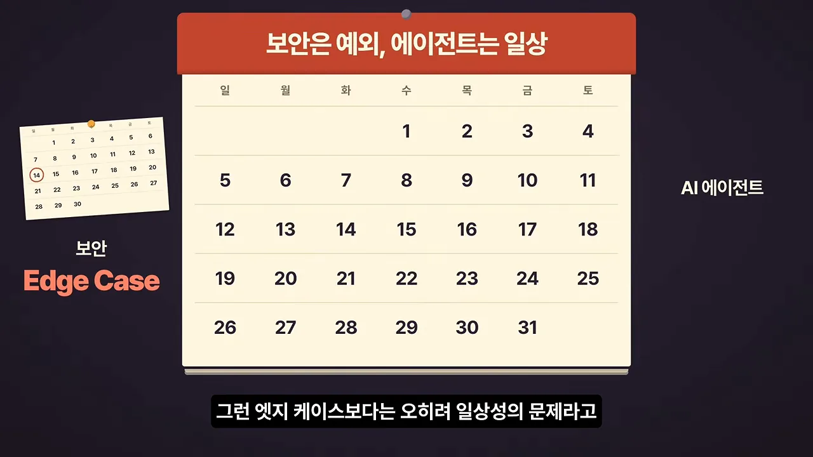
AI 에이전트의 문제는 엣지 케이스보다 일상성의 문제예요. 임페라이는 이를 먼데인 페일러(mundane failure)라고 불러요. 내 의도대로 움직이지 않는 문제, 위험한 일을 하는 문제이고, 꼭 보안 사고일 필요는 없어요. 규제나 표준 대응 같은 당장의 수요도 있지만, 근본적으로는 이 문제를 느끼고 풀고 싶어 하는 파트너가 고객이 되길 바란다고 말해요. 해결책을 고민하거나 내놓는 곳이 많지 않은 시장이라는 거예요.
첫 단추는 거버넌스 샌드박스
마지막 질문은 '거버넌스를 시작하려는 회사가 첫 단추로 무엇을 해야 하나'예요. 대표의 첫마디는 너무 어렵게 생각하지 말라는 거예요. 오늘 보여 준 것을 처음부터 다 갖추려 하면 매우 어려워요. 하지만 이것도 일종의 실험이라고 봐요.
대표는 AI와 에이전트가 주는 가장 큰 가치를 흔히 말하는 개발 비용 절감이 아니라, 실험 비용을 거의 0으로 만든 데서 찾아요. 그래서 AI 활용 사례의 ROI(Return on Investment)도 사람·시간·비용을 얼마나 줄였느냐가 아니라, 그 덕분에 실험을 얼마나 많이 할 수 있게 됐느냐로 봐야 한다고 해요. 에이전트 개발을 실험처럼 접근하듯, 에이전트를 통제하는 일도 실험으로 접근하라는 거예요.
앞으로 3년 동안 절대 안 바뀔 철옹성을 만들어 두고 거기에 편하게 에이전트를 붙이겠다는 생각은 통하지 않아요. 통제할 대상이 시시각각 변하니까 도구도 조금씩 계속 바뀌어야 해요. 그래서 작은 곳에서 먼저 실험해요. 에이전트가 하나도 없어도, 한두 개만 있어도, 거버넌스를 시험해 볼 만한 곳을 골라 루프를 돌리고 데이터를 쌓으며 연습해요. 지금까지 거의 해 본 적 없는 일이기 때문이에요.
아래 그래픽이 대표의 결론을 그대로 그려요. 모래 상자가 둘로 나뉘어 있어요. 왼쪽은 흐릿한 '에이전트 개발 샌드박스'(양동이와 삽), 오른쪽은 강조된 '거버넌스 샌드박스'예요. 오른쪽 칸에는 앞에서 본 루프(원)와 쌓이는 데이터(칸)가 그려져 있어요.
그 작은 곳에서 실험을 한다는 마음으로 샌드박스를 만드실 거면 에이전트 개발 샌드박스도 만들지만 거버넌스를 위한 샌드박스도 만드는게 좋겠다.
— 영상 51:11